If there's one incredibly positive thing that has come out of social media, I think it's shared knowledge of places. This quarter, I found myself abroad in Madrid with no idea where to eat, shop, go out, or even buy toiletries! But luckily, I was getting tons of content showing me where to go.
The current process, if you're getting content recommendations, is EXCEPTIONALLY annoying. First, you save the location. Then, maybe write it down or pin it in maps
separately. If you remember you saved it, you scroll through Saved to find it, or navigate Google map's nasty UI (someone had to say it) to find the pin.
Or, you scroll through your friends DMs and texts to find the place, and navigate separately. Or, you navigate away from the reel, write the place in your notes app, and
separately open maps to find it.
Even with these methods, it's easy to pass by a place and not remember that you wanted to go there. Depending on how you save recommendations, it can take four steps
between two or three different apps--which is ridiculous! So, in Stanford CS fashion, I made an app.
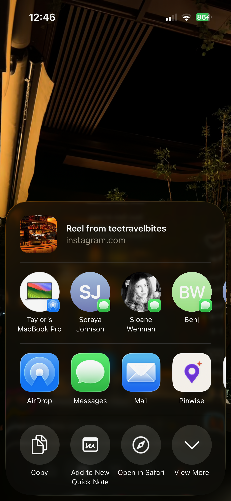
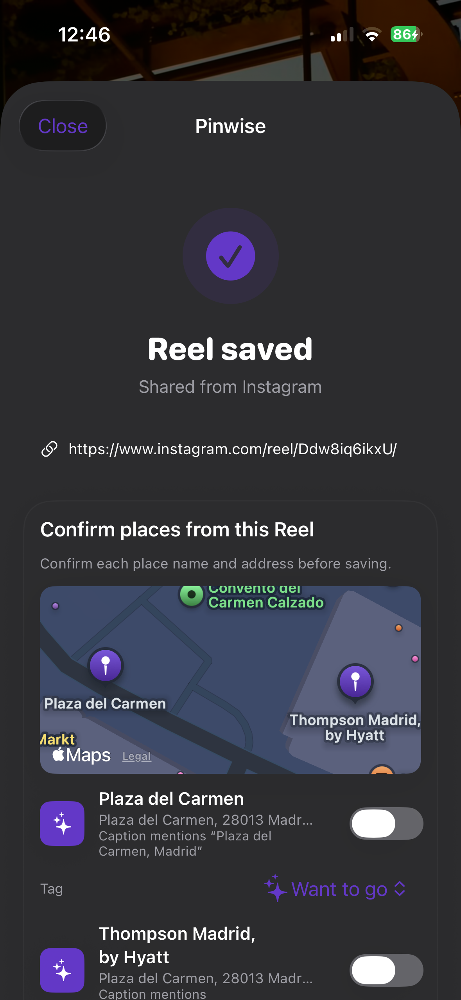
First, you can export reels via share and save them as locations to your pinned map. The app tries to automatically scrape the locations from the caption, or you can manually input the name which will load through the Apple Maps API. Additionally, with each place you add a category (shopping, drinks, culture) so it's organized for you.
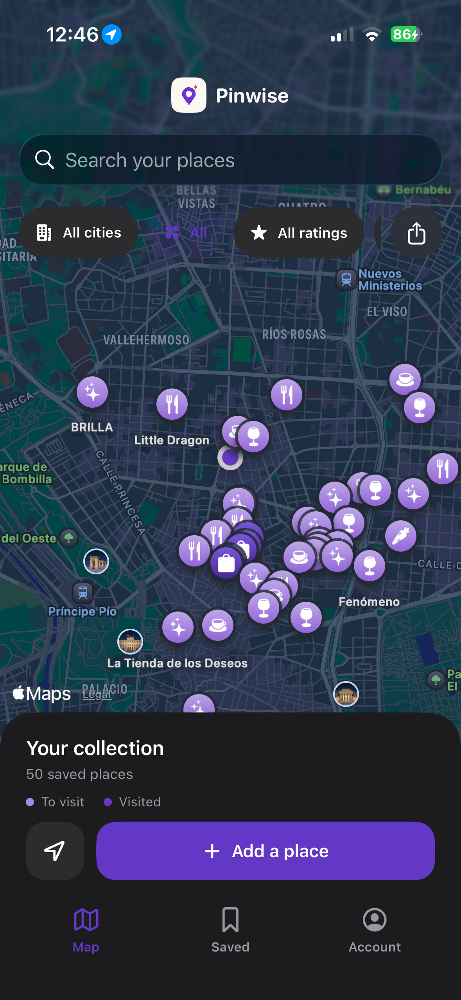
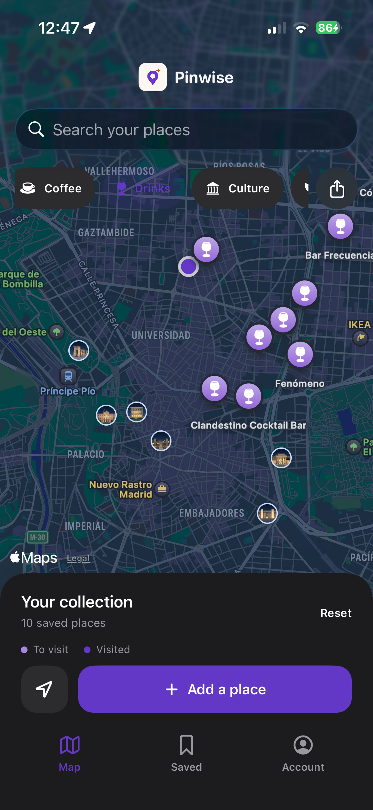
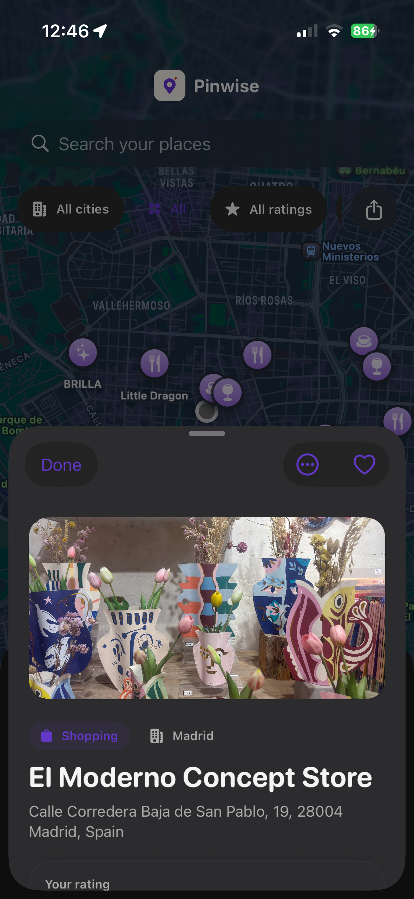
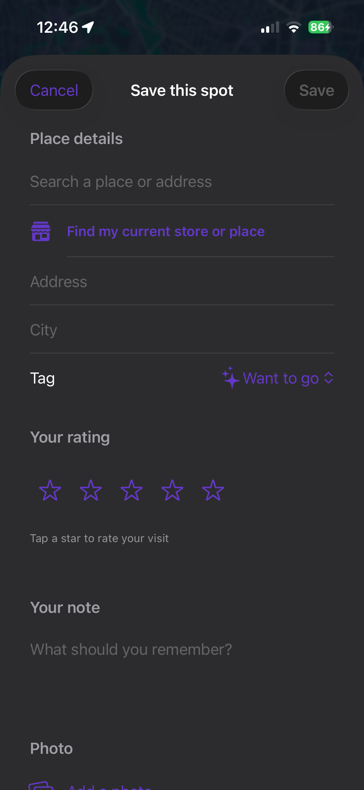
Once in the city, you can see a view of all of your pins, filter by category, see what you're nearby, and leave notes as well as ratings on each. Also, you can add a photo of it as a memory! If you're somewhere you like, you can add your current location to your favorites map.
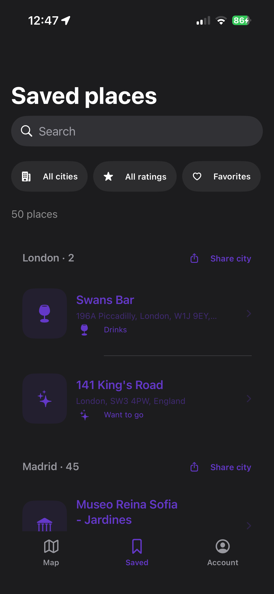
In an alternate tab, you can scroll your saved locations by-city, and filter by category. There's a also a link back to the original reel if you want to remember why you were interested. So if anyone asks where you want to go to dinner, your desired locations are already saved and in a viewable format.
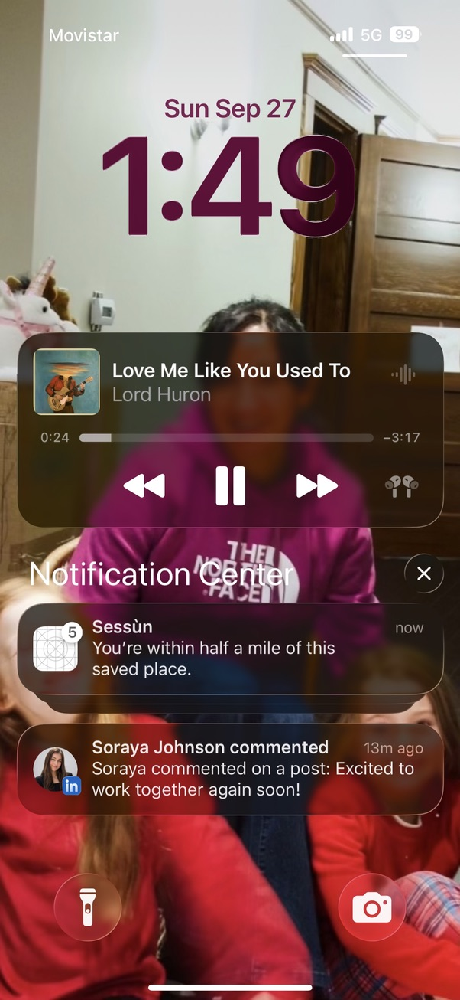
I also hate when I walk by, or am close to somewhere I want to go, and I don't know it. Using location services, I have the app send a ping to your phone if you're within 0.5 miles (configurable) of a location that you've saved, or want to go to.
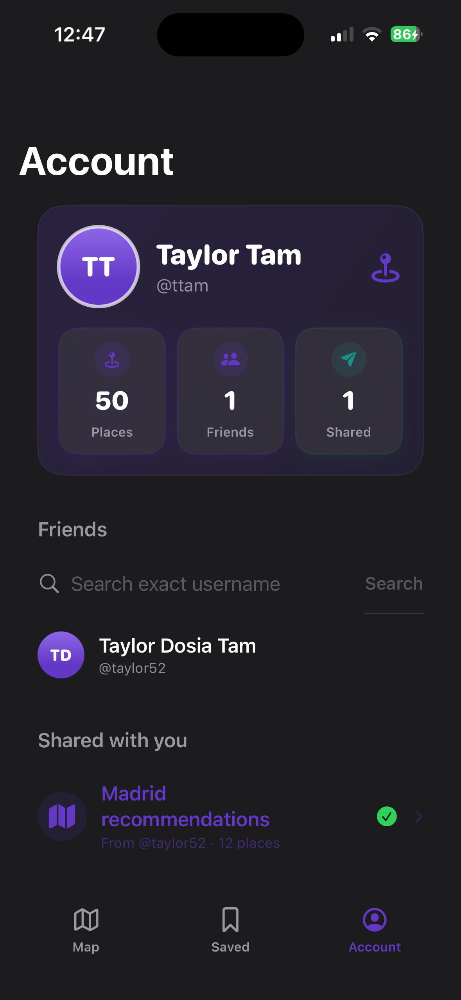
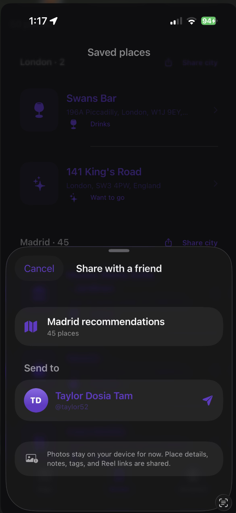
Another thing I've thought a lot about travel is the social aspect. Before coming here, SO many people were telling me: "I have tons of recommendations for you!" -- but, I never recieved them. Or if I did, then it'd be in a weird format (shared note, text) that wasn't easy for me to parse or save. I remember thinking: I wish you could just save your pins per-city. Via Firebase, I added an optional auth method that allows you to share all your recommendations by-city - your notes, pictures, ratings for each place you've traveled to. This then auto-populates into a friend's map, and voila, the recs are actually recieved.
I'm still adding a Tik Tok integration (as a non-user), but it was incredible to see how easy it was to build this app via Codex. I've been building apps since my freshman year of highschool (2020!) -- when SwiftUI was first developing, XCode was impossible to use, and Stackoverflow wasn't quite yet populated with every question (back in the day, I used to contribute). Now, with a couple prompts, guidance, using the app and making modifications throughout the day, this was possible to build in only two weeks -- and I could've done it faster had I dedicated my entire day to it. I was even able to automate most of the Firebase setup.
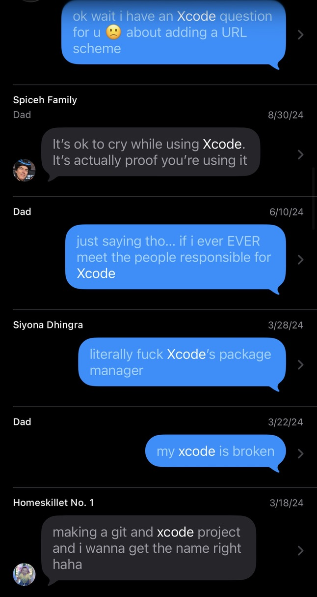
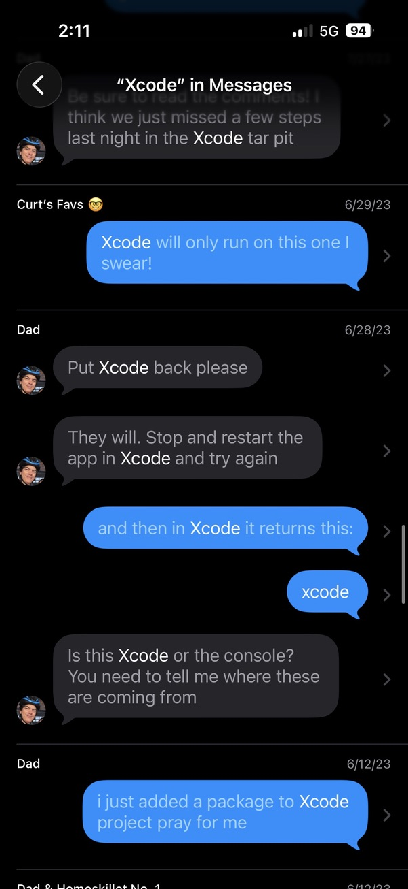
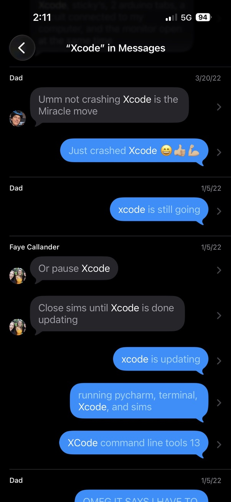
If you ever used Xcode early-on, you would know it was legitimately INFURIATING. To put it nicely. But now, the concept of IDEs being 'hard to use' or navigate, is pretty much obselete. I've been thinking about how we're evolving towards a format where IDE setup, learning where everything is in Xcode, or package managers will be completely under-the-hood--if it isn't mostly already!
Experiences like these just remind me how we're able to build out tooling for ANYTHING now, regardless of how the nuances of frameworks or languages change. Even weird problems like 'where do i go in a city?' can be fixed and developed for in days or weeks. I know this is a bit, 'fork found in kitchen,' but we're truly living in an exciting time for engineering, and solving any issue we want!